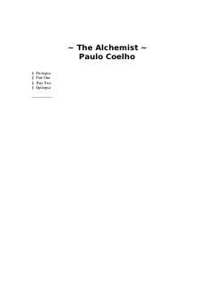

TAO'z orzusi ortidan borib taqdirini topgan cho'pon yigit haqidagi falsafiy roman.
Paulo Koeloning ushbu mashhur asari o'z taqdirini va hayotiy maqsadini izlab chiqqan Ispaniyalik cho'pon bola Santiago haqida hikoya qiladi. Asar inson o'z орzulariga erishishi uchun yurak ovoziga quloq tutishi va imkoniyatlar eshigini ochishi kerakligini o'rgatadi.